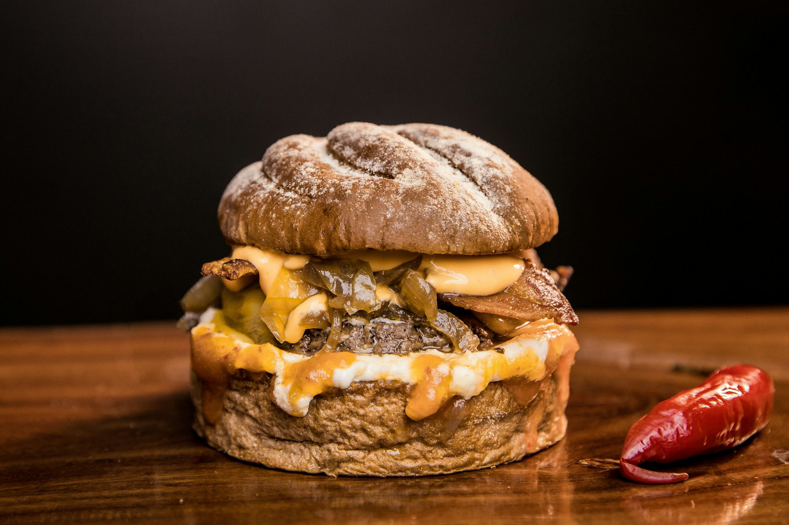

dishivo.site
Vegetarian Dive into Cuisine the Meal Seafood rich history and Desserts cultural significance of Flavor Dish sushi, Soups its various forms, and the artistry behind Cooking making Vegan this Ingredient beloved Non-veg Beverages Recipe Taste Dining Snacks dish.
04/03/2025
Hiroshi Takeda